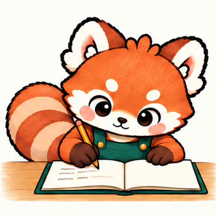

FOCUS FRIEND · MOTION STUDY
잠깐 생각하고, 다시 쓰기
턱을 괴고 시선을 옮기며 잠시 생각합니다. 필기·페이지 넘기기와 이어지는 흐름도 함께 확인해 보세요.

생각하기 · 01 / 1212 fps · 2초 반복
스페이스: 재생 / 정지 · 방향키: 한 장씩 보기
턱을 괴고 시선을 옮기며 잠시 생각합니다. 필기·페이지 넘기기와 이어지는 흐름도 함께 확인해 보세요.

스페이스: 재생 / 정지 · 방향키: 한 장씩 보기